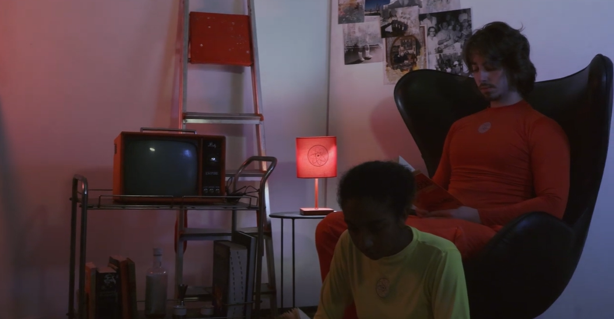
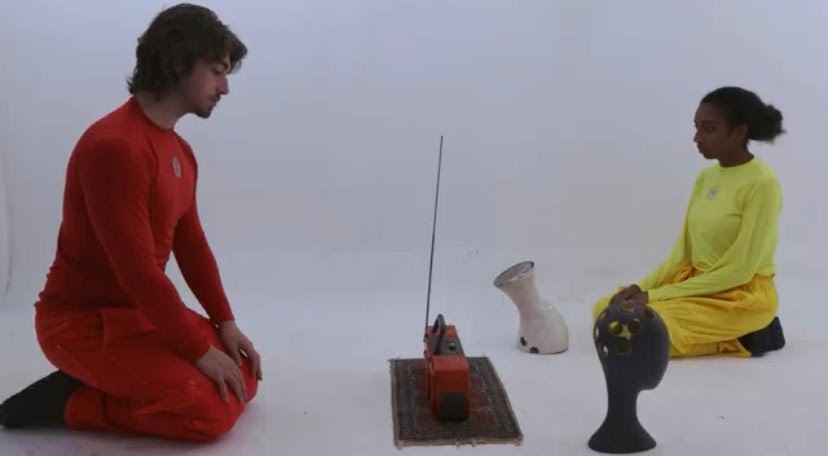
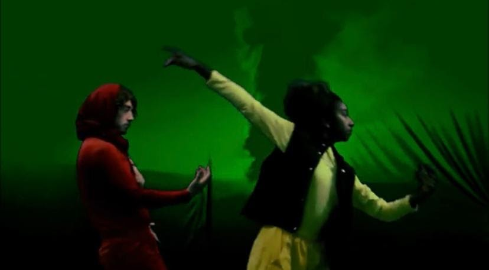
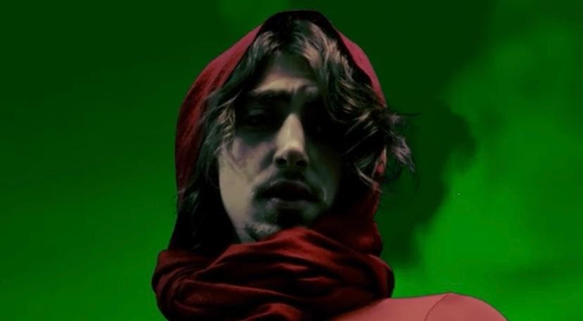

Produção
Atmosfera

- Categoria
- Produção
- Ano
- 2024
- Formato
- A definir
- Duração
- A definir
Sobre o
projeto
Presos no planeta Pascoal-2, dois membros sobreviventes da nave EDB, interpretados por Fernanda Argollo e Henrique Novaretti, lentamente se transformam em algo mais para sobreviver a um ambiente hostil.
Inclua aqui as responsabilidades da Julia e como a fotografia contribuiu para a narrativa.
Frames & bastidores



Ficha técnica
- Produção
- Julia Figueirôa
- Direção
- Lucas de Araújo Puech
- Produção
- A definir